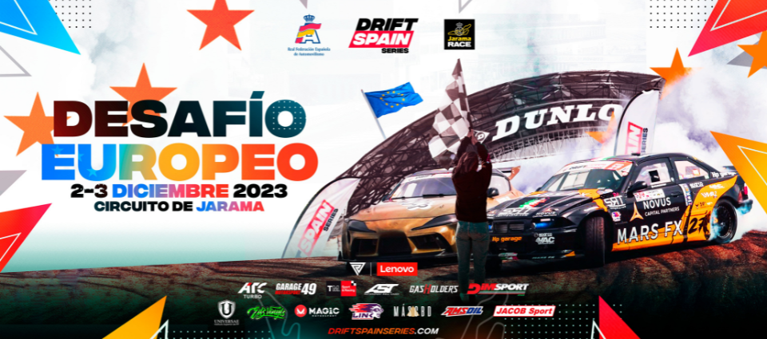
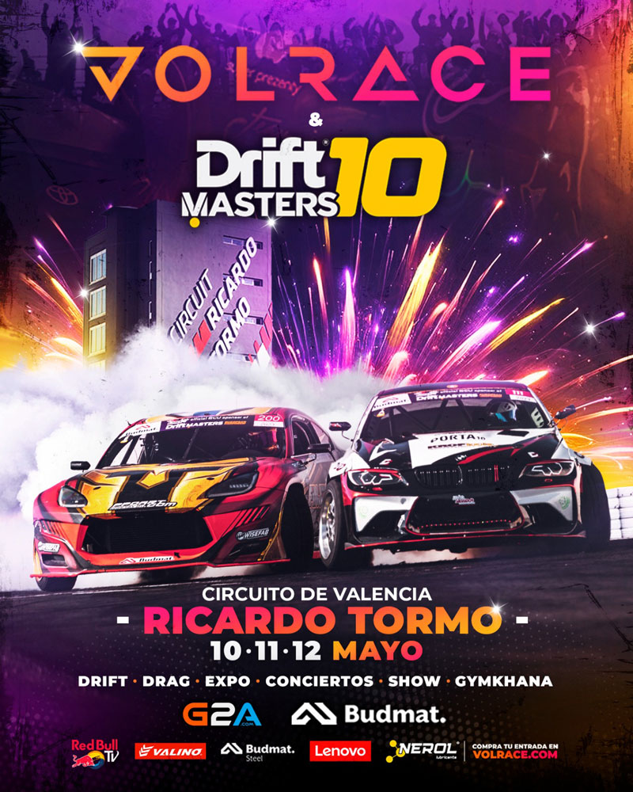

Esenciales
Mas eventos
Introducción
En España, los eventos de coches incluyen competiciones como el Rally de España del WRC y el Gran Premio de España de Fórmula 1. También hay encuentros populares como Drift Spain, VolRace y Autopia, que celebran la pasión por los automóviles en el país.
DriftSpain
Drift Spain es un campeonato nuevo adaptado a los circuitos más rápidos de España, compartiendo pista con los mejores campeonatos internacionales. Un evento en el que podrás encontrar batallas de drift a lo largo de toda la temporada, y finalmente el Campeonato de Europeo.
 Visitar DriftSpainVolrace
Volrace, gasolina en las venas. Trazados completos para hacer Drift, drag, expo, tandas. Eventos de velocidad en España para aficionados del motor. Este, es muy parecido al anterior, pero en Volrace se mezcla el drift con gymkhanas y exposiciones de mas coches a parte de los de los pilotos!
 Visitar VolraceAutopía
Autopia es un evento que celebra la cultura del automovilismo en España, con exhibiciones de coches clásicos y modernos, competiciones de velocidad y demostraciones de habilidades de conducción. Es popular entre entusiastas de los coches y aquellos interesados en la industria automotriz.
 Visitar Autopía
Visitar Autopía